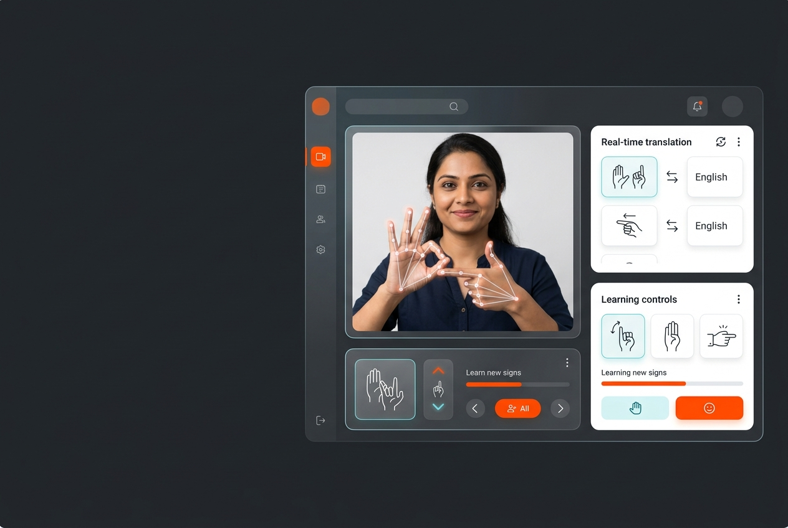
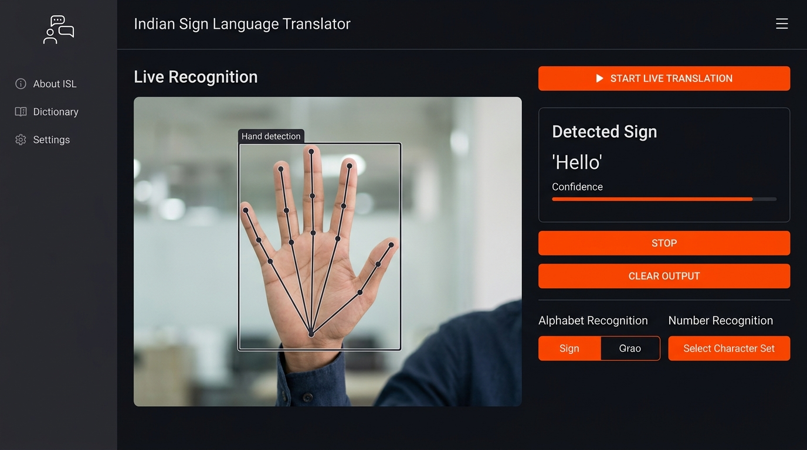
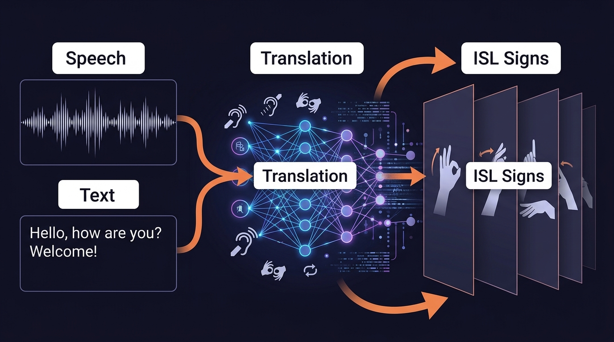
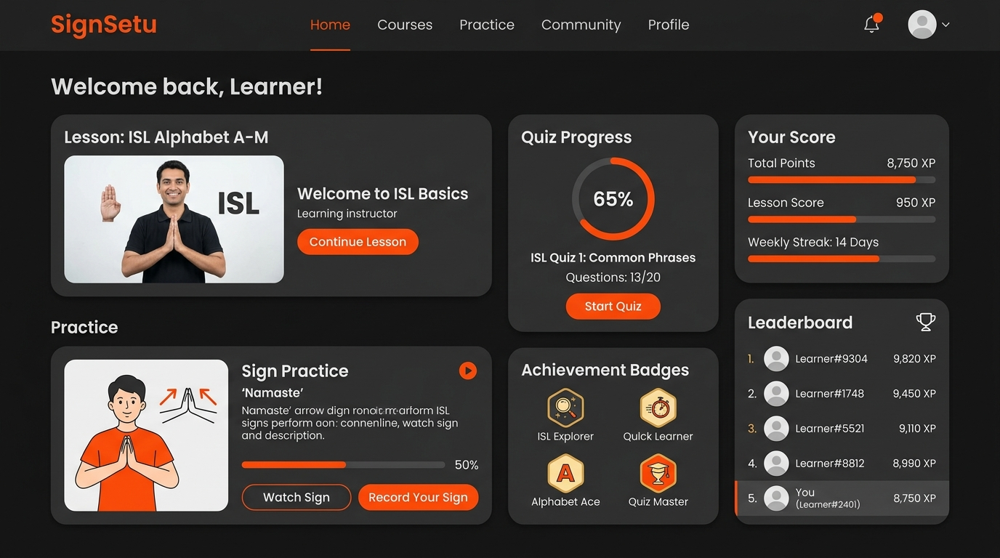
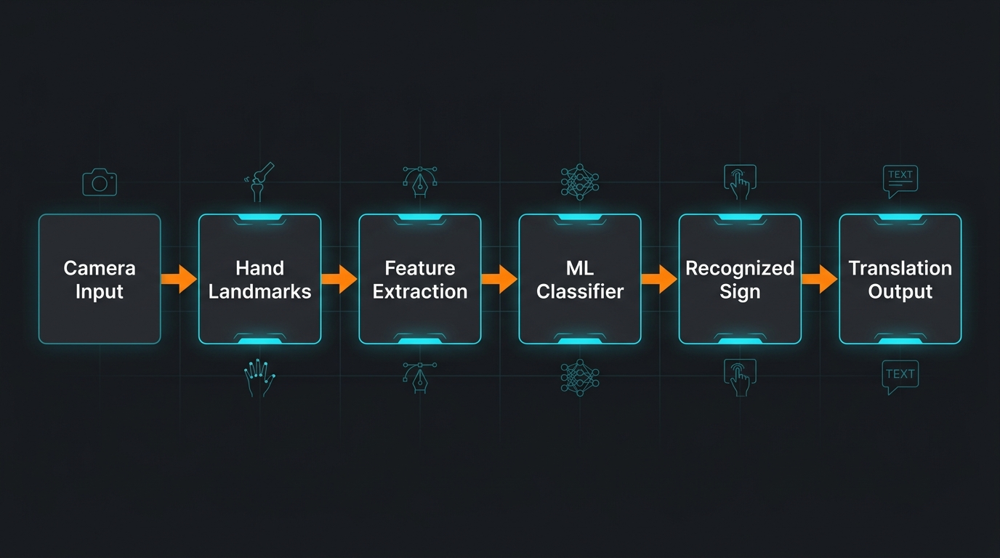

Indian Sign Language translation and gamified learning platform using computer vision and machine learning

Project Overview
This two-module assistive system was developed to help bridge real-time communication gaps for the deaf and hard-of-hearing community through Indian Sign Language recognition, translation, and learning tools.
The project combines real-time sign alphabet and number recognition with a separate gamified learning experience. It reached the National Semi-Finals of Mastek DeepBlue Season 11 among engineering teams across India.
Live Translation Interface
Real-time sign detection with MediaPipe hand landmarks, detected sign output panel, and confidence visualization.

Bidirectional Translation Engine
Speech-to-Sign converts spoken English into ISL animations. Text-to-Sign converts typed text into gesture sequences.

Gamified Learning Platform
Interactive web-based learning with practice exercises, quizzes, achievement badges, and live leaderboards.

System Architecture Pipeline
The recognition pipeline flows from camera input through MediaPipe landmark detection, feature extraction, Scikit-learn ML classifier, to the final recognized sign and translation output.

Core Capabilities
- Real-time sign alphabet and number recognition using MediaPipe hand-landmark tracking and Scikit-learn classifiers.
- Speech-to-Sign conversion from spoken English into sign animations.
- Text-to-Sign conversion from typed text into ISL gestures.
- Interactive practice exercises, quizzes, and live score leaderboards.
Technology Stack
Python, MediaPipe, Scikit-learn, OpenCV, Streamlit, PyTorch, React, Node.js, Express.js, and Render.